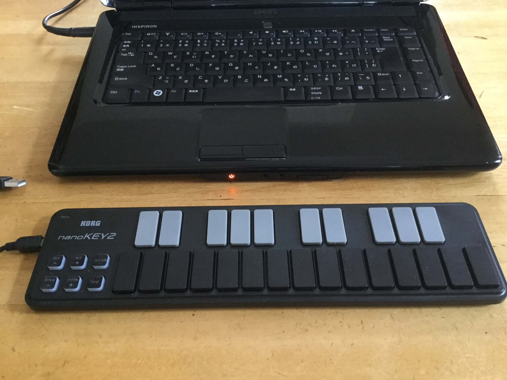
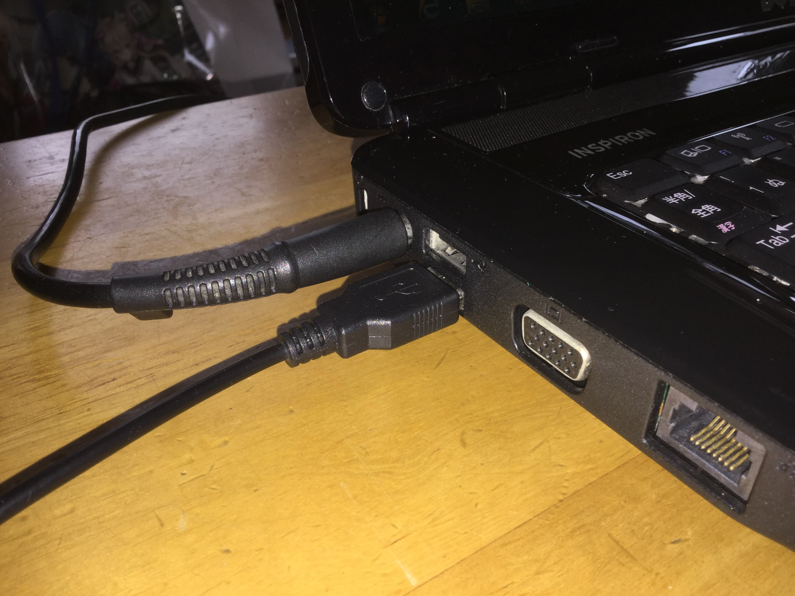
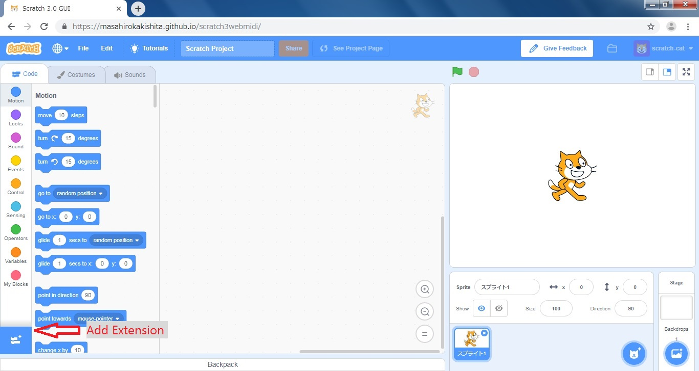
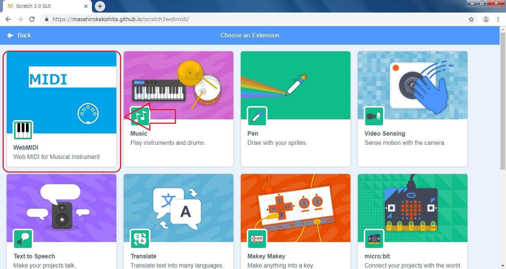
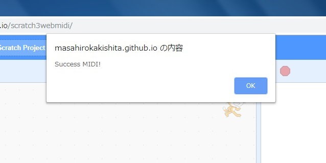
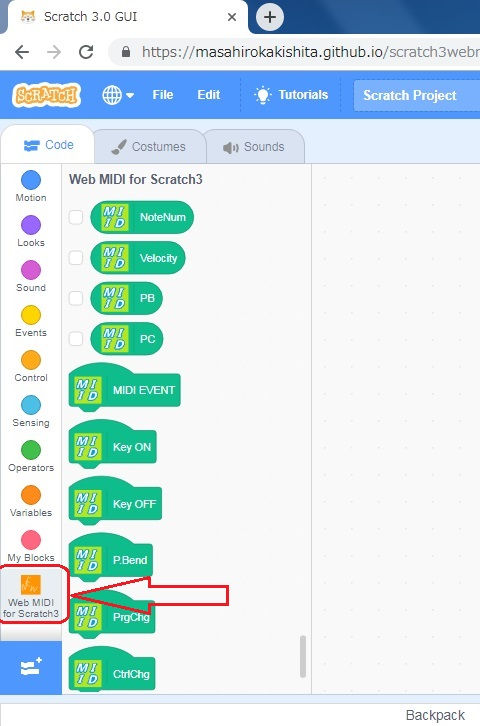
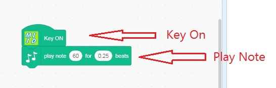
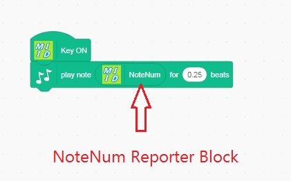

Usage of Scratch3 MIDI
The bellow is a procedure to use Web MIDI extention for Scratch 3.
1. Pripare a MIDI kyoboard and connect to your computer through USB.


2. Open this URL after connection a MIDI keyboard to your computer.
https://masahirokakishita.github.io/scratch3webmidi/
3. Add Extension, bottom of left.

4. Extension library is opened and click Web MIDI extension.

5. Web MIDI API is started as follows, push ok the button.

6.You can find some items of Web MIDI in the block palette

A symple example
7. Drag and drop Note On hat and Play Note block to the script plane.

8. Set note number reporter block to Play Note block.

And then you play the MIDI keyboard, you can get sound.